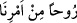

“kendisiyle doğru yola” İslâm’a “eriştirdiğimiz bir nur kıldık. Şüphesiz ki sen doğru
bir yolu göstermektesin.”
Burada Kur’an “ruh” diye isimlendirilmiştir. Zîrâ Kur’an, kalpler için bedenlere
nisbetle ruh gibidir. Kur’an, kalpleri hoş bir hayatla diriltir. Diğer bir ifâdeyle kalpler
Kur’an’la hayat bulur. Bu da, ölüm mesâbesinde olan cehâleti ortadan kaldıran faydalı
ilimdir.
Râgıb şöyle demiştir: Kur’an, Allah Teâlâ’nın “Âhiret yurdu, işte asıl hayat odur”
(el-Ankebût, 29/64) diye vasfedilen âhiret hayatının kazanılmasına vesile olduğu için
“ruh” diye isimlendirilmiştir.
“__WORD__ ifâdesi, “bizim emrimizden kaynaklanıp başlayan ruh” anlamına gelir.
Mümin sûresinde buna dâir îzâhat geçmiştir. “Ruh”tan kasdedilenin, Cebrâil (a.s.)
olduğu da söylenmiştir. Cebrâil (a.s.)’ın Peygamberimiz (s.a.)’e vahyetmesinin mânâsı,
onun vahiyle Peygamber’e gönderilmesidir. Şâyet “Peygamberimiz (s.a.) evvel emirde
kendisine görünenin Cebrâil (a.s.) olduğunu ve işittiğinin Allah kelamı olduğunu nasıl
anladı?” dersen ben de “Allah, Peygamber için bu hakîkatı bilecek zorunlu bir ilim
yarattı” derim. Zarurî ilim, hakikî îmânı gerektirir. Bundan da kesin inanç ve Allah’a
tam bir saygı meydana gelir. Zîrâ saygı mârifet miktarıncadır.
“Sen kitap nedir, îman nedir bilmezdin.” Vahiyden önceki kırk sene. Buradaki
“vahiy”den maksad, peygamberlik vahyidir. Kitabın mâhiyetini bilmiyordun veya
Kur’an indirilmeden önce sen onu bilmiyordun. Yine sen kitabın muhtevâsında olup akıl
yoluyla elde edilemeyecek olan işlerin detaylarına îmânı bilmiyordun. Yoksa bundan
maksad, akıl ve düşünceye mahsus îman değildir. Peygamberimiz (s.a.)’in bu konuya
olan dirâyeti kesinlikle şüphe kaldırmaz. Zîrâ vuslat ehli âlimler ve Allah dostları,
bütün peygamberlerin vahiyden önce de insanların nefretini mucip her türlü büyük ve
küçük günahlardan masum olduklarında ittifak etmişlerdir. Bu durum peygamberlikten
önce de sonra da böyledir. Onlarda küfür ve inkâr şöyle dursun, büyük veya küçük
herhangi bir günah bile yoktu. “Peygamber, vahiyden önce Kur’an’ı, îmânın esaslarını
ve alâmetlerini bilmez” diyenin murâdı da bu olsa gerektir. Peygamber’in akıl ve nazar
yoluyla, dirâyetle sahip olduğu olgunluk, îmandır. Allah Teâlâ şöyle buyuruyor: “Allah
sizin îmânınızı zâyi edecek değildir” (el-Bakara, 2/143) Bu âyette Allah Teâlâ namazı
“îman” diye isimlendirmiştir. Çünkü namaz îmânın şubelerindendir. Buna şu husus da
delâlet etmektedir: Peygamberimiz (s.a.)’e, “Hiç puta taptın mı?” diye soruldu.
Peygamberimiz “hayır” dedi. “Peki, hiç şarap içtin mi?” diye soruldu. Peygamberimiz,
“ Hayır ben onların üzerinde bulunduğu durumun küfür olduğunu hep biliyordum”
buyurdu. “Ancak kitabı ve îmânı bilmiyordum” yani ahkâmın detaylarıyla alâkalı olan
şer’i îmânı bilmiyordum, demiştir.[142] Bunun için Kur’an’da “Sen kitap nedir, îman
nedir bilmezdin” âyeti indirilmiştir.
İbn Kuteybe şöyle demiştir: Araplar hep İsmâil (a.s.)’ın dîninden kalma hac yapmak,
sünnet olmak, evlenmek, boşanmak, cünüplükten yıkanmak, akrabalık ve hısımlık